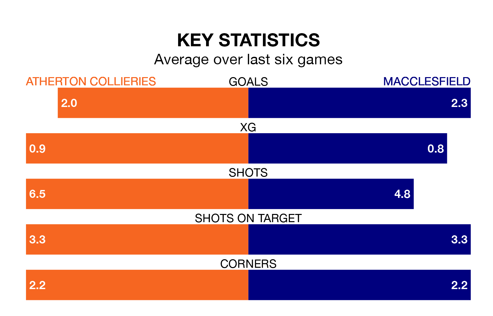

Relegation candidates Atherton Collieries face a challenge against high-flying Macclesfield on Saturday.
Atherton Collieries are 21st in the Northern Premier League table, and have picked up five wins and four draws in their 29 games to date.
Macclesfield, meanwhile, are second in the standings with 56 points, having won 17 and drawn five, and are 15 points behind table-toppers Radcliffe Borough.
With 63 goals in 29 games so far this season, Macclesfield are the league's third-highest scorers with 2.2 goals per game. And they are conceding fewer than average, letting in 36 goals at a rate of 1.2 per game.
Atherton Collieries, meanwhile, are below average scorers, with 1.3 goals per game, compared to a league average of 1.7. They have conceded 2.6 goals per game.
The home side are in bad form in the Northern Premier League, with one win and a draw from their last six games.
With four wins and two losses over that period, the visitors' form is much better – they have taken 12 points from 18, compared to Atherton Collieries's four.
Atherton Collieries's last match was on February 13, a 2-2 draw against Radcliffe Borough.
Macclesfield beat Ilkeston Town 5-3 last time out, on February 17.
Updated: 10:08 (UTC), 23/02/24